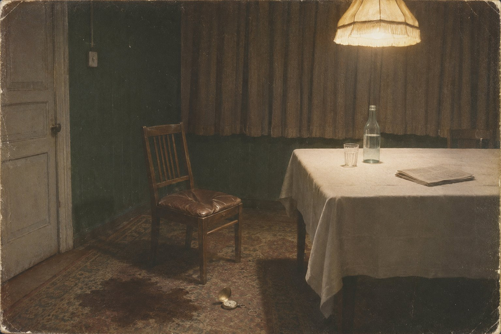

Свет в малой столовой

Коля Ерохин любил его так, как любят погоду в родной деревне: не за что-то, а потому что другой не бывает.
В охрану Ближней дачи его взяли в пятьдесят первом, из полка, за рост, за чистую анкету и за то, что он умел молчать. Ему было двадцать три года. Он родился под Вологдой, в доме, где над столом висел портрет в военной форме, вырезанный из «Огонька» и наклеенный на картон, и мать протирала его по субботам тряпкой вместе с иконой, которую держали за занавеской. Икону Коля в двенадцать лет отнёс в сарай, и мать ничего не сказала. Портрет он взял с собой в армию.
На даче портрета не было ни одного. Это удивило его в первую неделю больше всего остального. Дом стоял в лесу за Кунцевом, низкий, тёмно-зелёный, с двойным забором и вышками; внутри были длинные коридоры, ковровые дорожки, на которых не слышно шагов, и много одинаковых комнат с диванами в белых чехлах. На стенах в большом зале висели вырезки из журналов, приколотые кнопками, — дети: девочка с ягнёнком, мальчик на лыжах, пионеры у костра. Портретов хозяина не было. Коля решил, что так и должно быть: человек не вешает у себя дома зеркала на каждой стене.
Самого его Коля за два года видел близко раз десять, и каждый раз потом долго не мог уснуть. Хозяин был меньше ростом, чем на портретах, и старше; лицо у него было рябое, с жёлтыми белками, рука левая — Коля знал, хотя никто этого не говорил, — плохо сгибалась в локте. Однажды осенью он вышел в сад, когда Коля стоял у дорожки к беседке, остановился, посмотрел на него снизу вверх и спросил, откуда он. Коля ответил. Хозяин кивнул, сказал «вологодские — хорошие люди» и пошёл дальше. Коля написал об этом матери, а потом порвал письмо, потому что о том, что происходит на даче, писать было нельзя. Но слова эти он помнил, как помнят молитву.
⁂
В субботу, двадцать восьмого февраля пятьдесят третьего года, хозяин ездил в Кремль смотреть кино и вернулся на дачу с гостями. Гостей было четверо, их машины Коля знал по номерам. Ужинали в малой столовой долго, как всегда, до утра. Коля стоял на внешнем посту у служебного дома и видел, как то зажигается, то гаснет свет в окнах коридора: кто-то выходил, возвращался. Было морозно и тихо, снег под фонарём лежал синий.
Под утро, в пятом часу, гости уехали. Прикреплённый Хрусталёв, который в ту ночь дежурил при хозяине, пришёл в служебный дом и сказал, что было велено: ложитесь все спать, вы мне сегодня не нужны, я тоже лягу. Сказал и сам пошёл спать.
Коля слышал это из соседней комнаты, где отогревался после поста, и почувствовал, как в доме что-то сдвинулось. Такого не говорили никогда. За два года хозяин ни разу не отпускал охрану. Старостин, старший по смене, повторил вслух «вы мне не нужны» и посмотрел на Лозгачёва. Лозгачёв пожал плечами.
— Велено, — сказал он.
— Велено так велено, — сказал Старостин. — Только я спать не буду.
Никто не лёг. Сидели в служебном доме, пили чай, курили в форточку. Коля задремал на стуле, сидя, и ему приснилась мать, которая протирала тряпкой портрет, а портрет был мокрый и не высыхал.
⁂
Хозяин обычно вставал к одиннадцати, к двенадцати. В двенадцать в его комнатах было тихо. В час тоже. Дверь из служебного дома в главный вела через длинный коридор, и в конце его была ещё одна дверь, двойная, а за ней — комнаты, куда без вызова не входил никто. Если хозяин хотел, чтобы к нему пришли, он звонил. Если не звонил — к нему не шли.
В два Старостин сказал, что надо бы послушать.
Он сказал это Коле, а не Лозгачёву и не Тукову, и Коля потом понял почему: Коле было меньше всех терять. Если хозяин увидит его под дверью, накажут младшего, и Старостин скажет, что ничего не приказывал. Коля понял это сразу, в ту же секунду, и пошёл, потому что не пойти было ещё страшнее.
Он снял сапоги и прошёл коридор в шерстяных носках. Дорожка была мягкая. Перед двойной дверью он постоял, держась за стену, потому что сердце колотилось в ушах и ничего не было слышно. Потом сердце успокоилось, и он услышал голоса.
Говорили двое. Негромко, как говорят на кухне ночью, когда в доме спят. Один голос был его — Коля узнал бы его из тысячи, этот глуховатый, медленный голос, который по радио говорил «товарищи» так, будто каждое слово выносил из погреба. Только говорил он не по-русски. Коля не знал грузинского, но знал, как он звучит: хозяин иногда пел за столом с гостями, и песни долетали до служебного дома. Это был грузинский. Хозяин говорил мало, с остановками, будто ему трудно было ворочать языком.
Второй голос был женский.
Старый женский голос, хриплый, с теми же гортанными звуками. Он говорил больше, ровно, без крика, и Коле показалось — он потом всю жизнь не мог объяснить, почему ему так показалось, — что этот голос не уговаривает, а ждёт. Так ждут у постели, когда больной должен что-то сказать: подталкивают, повторяют одно и то же, замолкают и снова повторяют.
Одно слово женщина повторяла чаще других. Коля запомнил его, потому что оно было короткое и звучало, как свист: «Сосо». И ещё одно, длинное, которое он сначала не разобрал, а потом, когда она сказала его в третий и в четвёртый раз, отчётливо, с нажимом, — разобрал и запомнил по звукам, не понимая: «мгвдели».
Коля стоял под дверью и не дышал. Он думал, что это, наверное, кто-то из грузинской родни, о которой ему ничего не было известно, что её привезли ночью тайно, мимо поста, и что за то, что он слышит этот разговор, его самого увезут так же, мимо поста. Он отступил от двери на цыпочках, прошёл коридор и в служебном доме сказал Старостину шёпотом:
— Он с кем-то разговаривает. С женщиной. По-грузински.
Старостин побелел. Это было видно: у него была тонкая кожа, и кровь ушла с лица, как вода из раковины.
— С какой женщиной?
— Не знаю. Старая.
— Мимо тебя проходила?
— Нет.
— Мимо кого проходила?
Никто не ответил. Лозгачёв сказал, что, может, это радио. Туков сказал, что у хозяина нет радио в малой столовой. Старостин сказал, что это не их дело, что если хозяин принимает кого-то, о ком не сказал охране, значит, так надо, и что тот, кто туда сейчас войдёт без звонка, может сразу писать матери прощальное письмо. Он сказал это и посмотрел на Колю.
Больше к двери никого не посылали. Сидели и ждали звонка. Звонка не было.
⁂
В Москве в начале марта темнеет около шести. В половине седьмого в окне малой столовой зажёгся свет.
Его видели все: окно было видно из служебного дома, если встать у крайнего окна в коридоре. Свет зажёгся не сразу ярко, а будто кто-то нашёл выключатель на ощупь, в темноте. Старостин сказал «ну, слава богу», и все вздохнули, потому что свет значил, что хозяин встал и сейчас позвонит, спросит чаю или почту.
Звонка не было и после этого. Час. Два. Три.
Коля ещё раз подходил к двери, сам, без приказа, около девяти. Голосов больше не было. Был другой звук, которого он не понял: хриплый, мерный, с долгими перерывами, будто за дверью кто-то медленно пилил сырое дерево. И один раз, совсем тихо, — женский голос, одно слово: «Сосо». Не вопросом. Так говорят «ну вот» или «сиди».
В десятом часу из Кремля привезли почту — пакет из ЦК. Почту положено было отдавать в руки. Лозгачёв взял пакет, постоял с ним в коридоре, сказал «ну, мужики, если что — поминайте» и пошёл. Коля пошёл за ним до двойной двери, потому что не мог не пойти, и остановился на пороге.
Лозгачёв прошёл большую столовую, открыл дверь в малую и остановился так резко, что Коля, стоявший сзади, налетел на его спину.
Хозяин лежал на полу, у стола, на боку, подогнув под себя правую руку. На нём были пижамные штаны и нижняя рубаха. Ковёр вокруг него и сами штаны были мокрые, тёмные, и от этого пятна шёл тяжёлый кислый запах, который Коля знал по деревне: так пахнет в избе, где долго лежит лежачий старик. Рядом валялись карманные часы. На столе стояла открытая бутылка «Нарзана», стакан и лежала «Правда», сложенная вчетверо. Верхний свет горел.
Хозяин был в сознании. Это было самое страшное, что Коля увидел за всю жизнь, и потом, через много лет, когда ему приходилось видеть разное, — всё равно самое страшное. Глаза были открыты и всё понимали. Правая половина лица опустилась, как у тряпичной куклы, угол рта съехал вниз, и из него на ковёр тянулась слюна. Левая рука лежала на полу ладонью вверх и слабо двигалась, пальцы сжимались и разжимались, будто он хотел что-то позвать. Он издавал звук — тот самый, который Коля слышал из-за двери: «дз… дз…», и между этими звуками хрипел, долго, с присвистом.
Лозгачёв бросил пакет и опустился на колени.
— Товарищ Сталин… — сказал он и не знал, что сказать дальше. — Товарищ Сталин, вызвать врача?
Хозяин не ответил. Он смотрел не на Лозгачёва. Он смотрел мимо, в угол, за стол, туда, где у стены стоял стул.
Коля посмотрел туда же. Стул как стул, один из шести, с прямой спинкой. Только он был отодвинут от стола и развёрнут — не к столу, а к лежащему на полу человеку, — так, как ставят стул, когда садятся у постели. И сиденье, обтянутое кожей, было продавлено, как бывает, когда с него только что встали.
Больше в комнате не было никого.
Коля поднял с пола часы, потому что Лозгачёв сказал «подними», и посмотрел на них. Часы стояли. Стрелки показывали половину седьмого.
Он долго потом думал о том, что половина седьмого была в тот день дважды: утром, когда остановились часы, и вечером, когда в малой столовой зажёгся свет. Если часы упали, когда упал хозяин, значит, хозяин лежал на полу с утра, с рассвета, все эти двенадцать часов, пока охрана сидела в служебном доме и пила чай. Значит, это он, лежащий, разговаривал за дверью днём, ворочая чужим языком. Значит, свет в половине седьмого вечера включил не он. Дотянуться до выключателя у двери он не мог: он не мог даже повернуться на спину.
Выключатель был у двери, на высоте плеча. Кто-то в темноте подошёл к двери, нашёл его на ощупь и включил свет, а потом вернулся и сел на стул. Чтобы он видел её лицо. Чтобы не было темно.
⁂
Дальше было то, что потом записали все, каждый по-своему.
Его подняли вчетвером, Коля держал ноги, и ноги были тяжёлые и холодные, как бревно из реки, и мокрая ткань пижамы прилипала к рукам. Перенесли на диван в большой столовой, укрыли пледом. Стали звонить. Звонили Игнатьеву, министру, тот сказал звонить Берии и Маленкову. Звонили Берии и Маленкову. Ждали. Хозяин лежал на диване и хрипел, и глаза его всё время уходили в сторону малой столовой, хотя дверь туда закрыли.
Около трёх ночи приехали Берия и Маленков. Маленков снял ботинки в прихожей, чтобы не скрипели, и прошёл к дивану в носках, держа ботинки под мышкой. Берия наклонился над лежащим, послушал хрип, выпрямился и сказал Лозгачёву:
— Что ты панику наводишь? Не видишь — товарищ Сталин крепко спит. Нас не тревожьте и товарища Сталина не беспокойте.
И они уехали.
Коля стоял у двери и видел глаза хозяина, когда Берия это говорил. Глаза были открыты. Хозяин не спал. Он лежал и слушал, как его ближайший человек объявляет его спящим, и левая рука его на пледе собрала край пледа в кулак и не отпускала.
Коля подумал тогда первую в жизни мысль, которую боялся додумать. Он подумал: она и это видит. Она видит, как они приехали в носках. Она этого ждала. Она для этого и включила свет.
Врачей привезли только утром второго марта. Профессоров, которые лечили хозяина раньше, среди них не было: его старый врач с января сидел в тюрьме по делу о врачах-отравителях, как и многие кремлёвские профессора. Новые врачи были незнакомые и боялись так, что у одного тряслись руки, когда он расстёгивал на хозяине рубашку. Они разрезали пижаму ножницами. Они поставили ему за уши пиявок, и Коля, которого приставили носить из кухни горячую воду, видел, как пиявки наливаются тёмной кровью на рябой коже, а хозяин смотрит в потолок и не может их стряхнуть.
⁂
Три дня Коля почти не уходил с дачи. Он спал в служебном доме урывками, на стуле, носил воду, бегал в аптечный пункт, стоял у дверей. Дом наполнился людьми, которых он раньше видел только на портретах в газете: члены Президиума дежурили у дивана парами, по очереди, и Коля видел, как они смотрят на лежащего и как смотрят друг на друга. Он не понимал этих взглядов и не хотел понимать.
Хозяин не приходил в себя полностью, но и не уходил совсем. Иногда он открывал глаза и обводил комнату взглядом, медленно, и Коле каждый раз казалось, что он ищет одно место и находит его — в углу, у двери, на высоте плеча, где был выключатель. Дышал он плохо: то часто и шумно, то замирал, и все в комнате замирали вместе с ним, потом с хрипом втягивал воздух снова. Лицо темнело. На третий день губы стали синие, почти чёрные. Его кормили с ложки, и еда выливалась из перекошенного рта на подбородок, и сиделка вытирала её марлей.
Пятого марта утром его вырвало кровью.
Коля как раз нёс таз. Кровь была тёмная, почти чёрная, густая, её было много, она залила подушку, плед, руки врача, который пытался повернуть голову лежащему набок. Пахло железом и чем-то кислым, больничным. Врачи заговорили быстро, вполголоса, кто-то сказал «желудочное», кто-то сказал «не записывать пока», и Коле велели уйти и вынести таз. Он вынес, вылил в снег за кухней, и снег стал чёрным, и Коля стоял над этим снегом и не мог отвести глаз. Потом, много лет спустя, он прочёл в журнале, что в медицинском отчёте, который через три месяца положили в ЦК, о кровавой рвоте не было ни слова. Он не удивился.
Вечером в большую столовую привели дочь. Она сидела у дивана, держала отца за руку и плакала без звука. Коля стоял в дверях. Без двадцати десять дыхание стало совсем редким, и врачи переглянулись.
И тогда хозяин открыл глаза.
Он открыл их широко, впервые за пять дней — оба глаза, и правый, на омертвевшей половине лица, тоже. И Коля, который стоял в дверях, увидел, что в этих глазах не было ни боли, ни страха смерти. Там был ужас другого рода: так смотрит ребёнок, которого застали за чем-то стыдным и который знает, что сейчас будет. Он смотрел в угол, мимо дочери, мимо врачей, мимо людей из Президиума, которые стояли полукругом и ждали.
И он поднял левую руку.
Все, кто был в комнате, потом рассказывали это по-разному. Одни говорили, что он показывал вверх. Другие — что грозил им всем. Дочь потом написала, что он то ли указывал куда-то вверх, то ли грозил всем им. Коля видел другое. Рука поднялась не высоко, не вверх. Она поднялась, как поднимает руку ребёнок, когда хочет, чтобы его взяли, — ладонью вперёд, к тому, кто стоит рядом. А потом, когда тот, к кому она тянулась, не взял её, рука на одно мгновение сжалась в кулак. И упала.
В комнате было очень тихо. Потом кто-то из Президиума громко, в голос, сказал шофёру: «Машину!» — и тишина кончилась.
Коля вышел в коридор. Коридор был пустой и тёмный, лампы горели через одну, дорожка гасила шаги. Он прошёл до поворота к малой столовой и остановился, потому что услышал за закрытой дверью малой столовой — в пустой комнате, где никого не было с первого марта, где на ковре ещё оставалось тёмное пятно, — как отодвигают стул. Негромко, по паркету, на полметра. Как встают, когда всё кончено и можно идти.
И щёлкнул выключатель. Полоска света под дверью погасла.
⁂
Он отслужил на даче до лета, пока дачу не закрыли и охрану не распустили по другим местам. Его взяли в милицию, в Москве, потом он женился, получил комнату на Соколе. Портрет, который он когда-то взял из дома, он снял со стены в пятьдесят шестом, после съезда, и долго не знал, куда его деть, — выбросить было страшно, держать было стыдно. Отнёс в сарай на дачном участке тестя, где тот хранил ульи. Мать к тому времени умерла.
Слово он помнил всю жизнь. Однажды, уже в шестидесятых, они с женой праздновали годовщину в «Арагви» на улице Горького, и когда официант, пожилой грузин с седыми бровями, ставил на стол сациви, Коля спросил его, что значит «мгвдели».
Официант посмотрел на него внимательно.
— Священник, — сказал он. — Мгвдели — это священник. А почему вы спрашиваете?
Коля сказал, что слышал где-то. Официант кивнул, будто именно такого ответа и ждал, и сказал, что есть одна история, её у них в Грузии все знают: в тридцать пятом году сын приехал к матери в Тбилиси, в последний раз, когда она была уже совсем старая, и спросил её, почему она его в детстве так била. А она сказала: «Потому ты и вышел хороший». А потом спросила, кем он теперь работает. Он ей объяснил — как царь, только больше. И она сказала: «А жаль, что ты так и не стал священником».
Официант ушёл. Жена спросила, о чём это. Коля сказал, что ни о чём.
Он думал потом об этом часто, особенно когда стал старым и сам начал плохо спать. Что она пришла к нему не жалеть. Что она села на стул и включила свет, когда стемнело, и тринадцать часов ждала, чтобы он сказал ей что-то — может быть, одно слово, может быть, имя, может быть, «прости», — и не дала никому войти, пока он не скажет. Что он так и не сказал. Что он пять дней лежал, мокрый, с пиявками за ушами, с чёрной кровью во рту, и мог бы сказать в любую минуту, и она бы его взяла. И что когда он наконец поднял руку — она не взяла.
Иногда Коля думал, что это неправда, что ему померещилось от страха и бессонницы, что голоса за дверью были радио, а стул отодвинул кто-то из прислуги. Он хотел, чтобы это было неправдой. Ему было жаль, если это правда, потому что тогда выходило, что есть кто-то, перед кем и такой человек — всего лишь мальчик, который не стал священником, и что этот кто-то приходит, садится на стул и ждёт. И не уходит, пока не дождётся. И когда Коля по ночам лежал без сна и слушал, как жена дышит рядом, он иногда поворачивал голову к стулу у двери, на котором висела его одежда, — проверял, не продавлено ли сиденье.